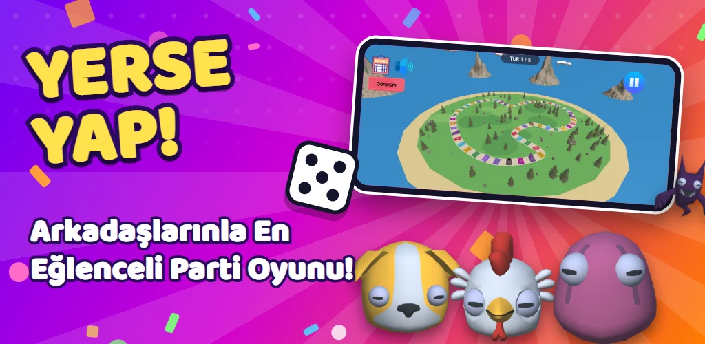
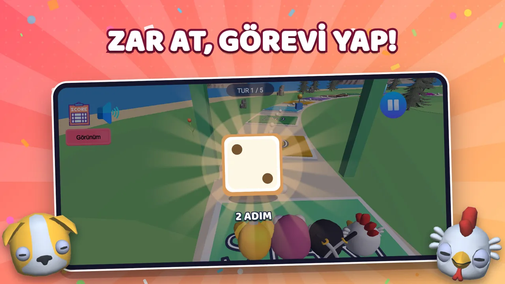
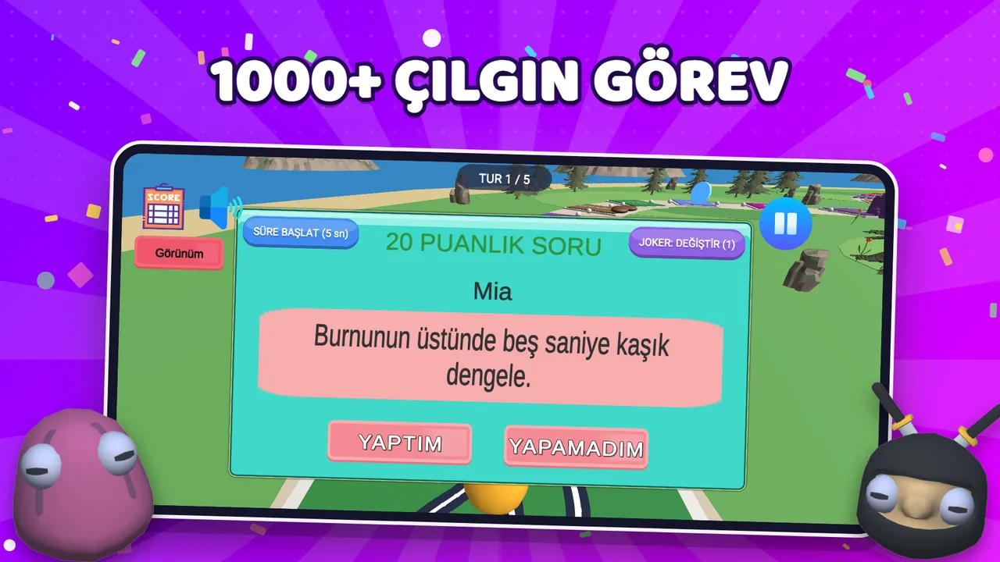
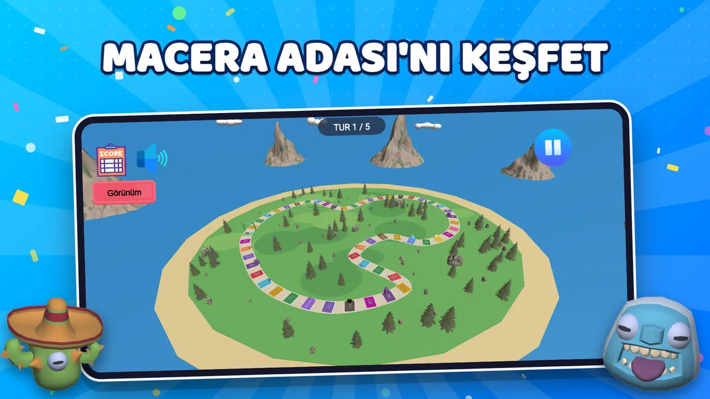
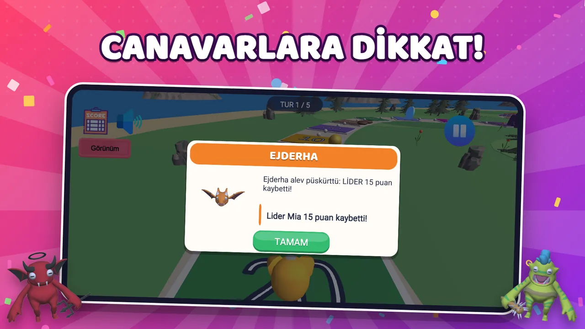
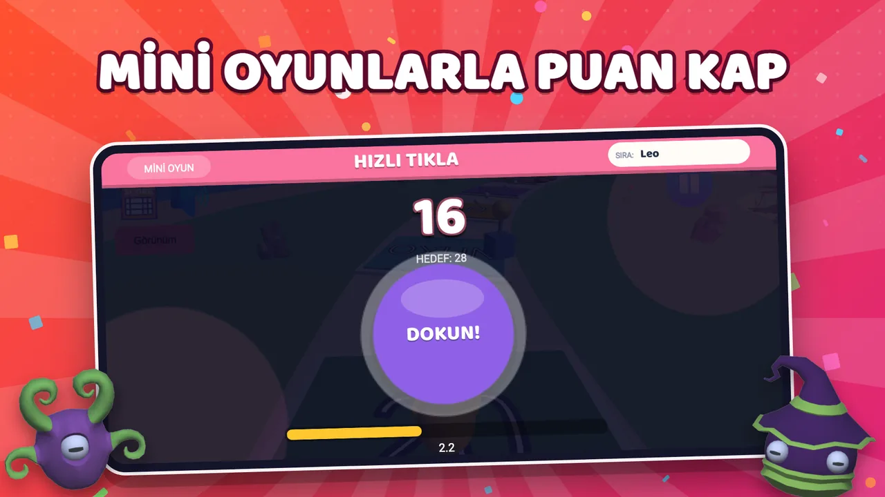
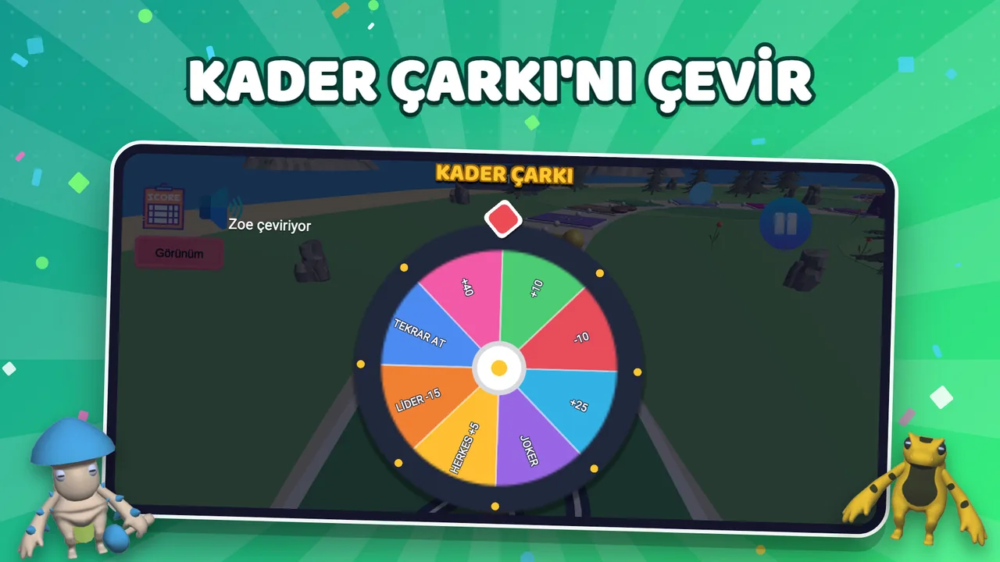
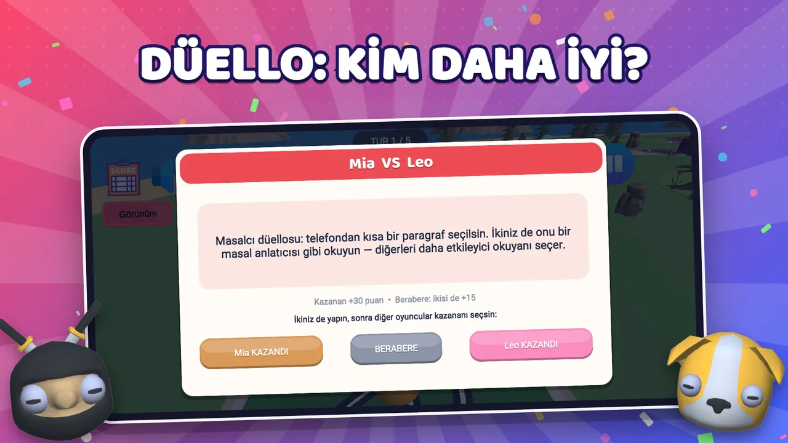
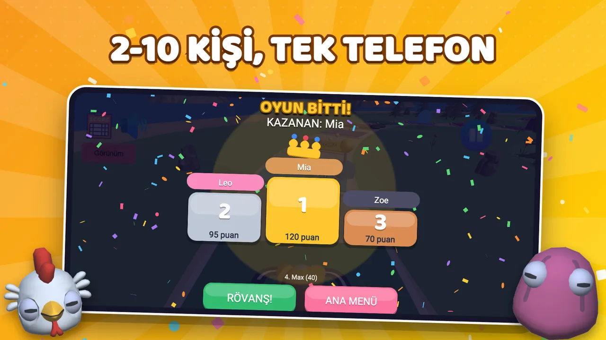

Yerse Yap: Parti Oyunu
Zar At, Görevi Yap!
Yerse Yap baştan yazıldı ve yepyeni haliyle geri döndü. Zarı at, pulunu ilerlet, geldiğin karenin görevini yap ve puanları topla. Yaparsan puan senin, yapamazsan arkadaşların seni uzun süre unutmaz! Tek telefon yeter: 2–10 kişi sırayla oynar.
Google Play’de ücretsiz. Eski adıyla YerseYap.

Yerse Yap Oyun İçi Görseller
Zar, görevler, Macera Adası, canavarlar, mini oyunlar, Kader Çarkı, düello ve kürsü.

Zar At, Görevi Yap
Sıra sende: zarı at, pulun renkli karelerde ilerlesin. Zıplayan çizgi film zarı senin renginde gelir.

1000+ Çılgın Görev
Geldiğin karenin puanına göre görev çıkar. Yaptım ya da Yapamadım; jokerle görevi değiştir, süreli görevlerde geri sayımı başlat.

Macera Adası’nı Keşfet
52 kareli kıvrımlı tahta: portallar, çukurlar, çamur tuzakları, altın kareler ve canavar inleri. Görünüm butonuyla adayı kuşbakışı izle.

Canavarlara Dikkat!
Ejderha lideri yakar, Ork haraç alır, Hayalet seni geri kaçırır. Canavar inine düşen sürprize hazır olsun.

Mini Oyunlarla Puan Kap
Hızlı Tıkla, Tam Zamanında, Renk Hafızası ve Zar Tahmini: refleksin ve hafızanla ekstra puan topla.

Kader Çarkı’nı Çevir
+40’tan Lider −15’e, Tekrar At’tan Joker’e: çarkı çevir, kaderine razı ol.

Düello: Kim Daha İyi?
Rakibine meydan oku, ikiniz de aynı görevi yapın; kazananı masadaki diğer oyuncular seçsin. Kazanan +30, berabere ikisine +15.

Kürsü ve Rövanş
Oyun bitince kürsü, konfeti ve eğlenceli ödüller. Rövanş bir dokunuş uzakta. 2–10 kişi, tek telefon.
Yerse Yap Nasıl Oynanır?
Bir dakikada kur, telefonu masada elden ele dolaştır.
Maçı ayarla
Mod (klasik ya da takım), tahta (Şehir veya Macera Adası), görev kategorileri ve tur sayısını seç. Canavarlar gibi ekstra kuralları aç-kapat.
Oyuncuları kur
2–10 oyuncu ekle, isimleri yaz, 12 karakterden pulunu seç. Takım modunda Kırmızı ve Mavi’ye ayrılın.
Zar at, görevi yap
Sırası gelen zar atar, geldiği karenin görevini yapar. Yaptım → puan senin. Yapamadım → arkadaşların unutmaz.
Kürsüye çık
Turlar bitince en yüksek puan kazanır. Kürsü, ödüller, oyuncu istatistikleri ve rövanş.
Tahtalar, Modlar ve Kategoriler
Her maç masanın keyfine göre kurulur.
🏙️ Şehir Tahtası
Klasik, sade tahta. Hızlı öğrenilir, hızlı oynanır: ilk oyun ya da kısa bir oturum için ideal.
🏝️ Macera Adası ★
52 kareli kıvrımlı ada ve özel kareler: Mini Oyun, Kader Çarkı, Düello, Herkes, Portal, Çukur, Çamur, Canavar İni, Altın (2×) ve Çiçek Tuzağı. Bitiş kemerinde tur bonusu.
🔴 Takım Modu 🔵
Kırmızı takım Mavi takıma karşı. Puanlar ortak toplanır; her görev bütün takım için sayılır.
Görev kategorileri
Yeni Yerse Yap’ta Neler Var?
Oyun sıfırdan yazıldı. İşte yeni sürümle gelenler.
🎡 Kader Çarkı
+40, +25, +10, −10, Lider −15, Herkes +5, Tekrar At ya da Joker. Çevir ve kaderine razı ol.
⚔️ Düello
Rakibini aynı göreve davet et. Kazananı diğer oyuncular oylar: kazanana +30, berabere ikisine +15.
👥 Herkes Görevleri
Bütün masa aynı anda aynı görevi yapar. En iyisini arkadaşların seçer.
🎮 4 Mini Oyun
Hızlı Tıkla, Tam Zamanında, Renk Hafızası ve Zar Tahmini ile ekstra puan.
🃏 Joker ve Altın Görev
Jokerle görevi değiştir, altın karede 2 kat puan kazan, üst üste yaptığın görevlerle seri bonusu kap.
✍️ Kendi Görevlerin
Kendi görevlerini yaz, desteye ekle. Aranızdaki şakalar da oyuna girsin.
⏱️ Süreli Görevler
Süre isteyen görevlerde geri sayım otomatik olarak kartın üstünde başlar.
🏆 Kürsü, Ödüller ve Rövanş
Konfetili zafer kürsüsü, maç sonu eğlenceli ödüller ve tek dokunuşla rövanş.
📊 Profiller, İstatistikler ve Günün Görevi
Maçlar boyunca biriken oyuncu istatistikleri ve her gün yeni bir Günün Görevi.
🌍 73 Dil
Telefonun diline göre otomatik açılır. Ana menüden DİL • LANGUAGE ile istediğin zaman değiştir.
🐾 12 Karakter
Kedi, penguen, koyun, ördek, köpek, tavuk, Pembiş, büyücü, ninja, yeti, uzaylı ve kaktüs.
📱 Tek Telefon, Hesap Yok
Kayıt yok, ek cihaz yok. Telefonu elden ele dolaştır ve oyna.
Sık Sorulan Sorular
İndirmeden önce kısa cevaplar.
Yerse Yap kaç kişiyle oynanır?
Tek telefon ya da tablette 2–10 kişi. Oyuncular sırayla oynar; ek cihaz gerekmez.
İnternet bağlantısı gerekiyor mu?
Oyun tek telefonda yerel olarak oynanır; ancak ücretsiz olduğu ve maç sonunda reklam gösterdiği için çalışması için aktif bir internet bağlantısı gerekir.
Çocuklar ve aileler için uygun mu?
Evet, Aile kategorisiyle. Parti ve Cesur (18+) kategorileri yetişkinlere yönelik görevler içerir; kategorileri her maçtan önce maç ayarlarından sen seçersin.
Kendi görevlerimi ekleyebilir miyim?
Evet. Ana menüden Kendi Görevlerin’i aç, görevlerini yaz; bir sonraki maçta desteye katılır.
Hangi dillerde oynanabilir?
Türkçe, İngilizce, Almanca, Fransızca, İspanyolca, Portekizce, Arapça, Hintçe, Japonca ve Korece dahil 73 oyun dili. Oyun telefonun dilinde açılır, ana menüden değiştirebilirsin.
Doğruluk mu cesaret mi oyunundan farkı ne?
Görevleri alıp etrafına bir tahta oyunu kuruyor: zar, puan, Macera Adası, canavarlar, mini oyunlar, Kader Çarkı, düello ve takım modu. Her maçın kürsüde bir kazananı var.
Makaleler
Yerse Yap ile ilgili rehberler ve oyun fikirleri.

Zarlı Tahta Oyunu Nasıl Oynanır? Yerse Yap Kuralları
Zar at, ilerle, göreve gel, puan topla. Zarlı tahta parti oyunu Yerse Yap nasıl oynanır, kare renkleri ne anlama gelir…

Görevli Parti Oyunları: Buluşmayı Şenlendiren 20 Görev Fikri
Ev partisi ve arkadaş buluşmaları için görev fikirleri: ısınma görevleri, performans görevleri ve grup görevleri. Kim…

Evde Sıkıldığınızda Arkadaşlarla Oynayacağınız Oyun
Evde sıkıldınız ve "ne yapsak" sorusunda takıldıysanız: kurulum istemeyen, 5 dakikada başlayan, 2–10 kişiyle oynanan …

Gençler İçin Grup Oyunları: Lise ve Üniversite Gruplarında Oynanacaklar
Lise ve üniversite arkadaş gruplarında oynanacak grup oyunları: yurt odasında, sınıf etkinliğinde ve ev buluşmalarınd…
Arkadaşlarını Topla ve Söyle: Yerse Yap!
Doğum günü, ev partisi, yılbaşı, kamp, yurt odası ya da aile buluşması: nerede olursan ol, Yerse Yap ortamı şenlendirir.